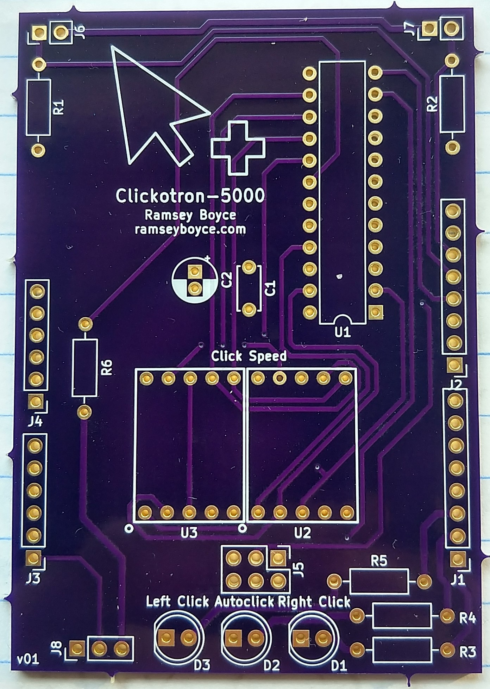

The Clickotron board is a shield for the Arduino Leonardo which extends the capabilities of a normal mouse. The Clickotron-5000 autoclicking device uses a Leonardo, a USB Host Shield board, and the Clickotron board on top, with my code loaded on the Arduino.
The arduino can simulate mouse clicks on the computer, so other input devices can be used to create mouse clicks. For example, I use the Clickotron with two foot pedals as left and right click. The device can also continuously click the mouse buttons when the respective pedal is held down, which rests my hands—I made the device because a compressed nerve was causing numbness in my hands and I had trouble using a regular mouse.
A normal USB mouse plugs into the USB Host board and the mouse signals are passed through the device. This means that the mouse can be used normally as if it was plugged into the computer without the device (see footnote 1 for details). Then other input devices can be soldered to the Clickotron to generate mouse clicks.
In my current setup with two foot pedals, the Clickotron has two modes, regular and autoclick. To switch between the modes, hold down both pedals until the autoclick LED turns on or off.
In regular mode the device will simulate a click for as long as a foot pedal is held down. The left and right click indicator LEDs will also turn on while the Clickotron holds the mouse button down. This allows me to select text by holding the left foot pedal down to hold left click and dragging the mouse across the text.
In autoclick mode, while a foot pedal is held down the device will constantly click at a speed that is set using a potentiometer soldered to the device. The number of clicks per second is shown by the two seven segment displays on the Clickotron. In autoclick mode, the click durations are generated based on a normal distribution so that the Clickotron will be indistinguishable from a human. I use this mode to play league of legends (during the coronavirus quarantine it’s the main way I talk to my friends) as you have to click constantly to move in the game and my fingers kept getting numb.

Usage
Put together the circuit either using the Clickotron board or a breadboard. If you do not use input devices that normally act as closed switches, you will have to modify the program to click when a “HIGH” voltage is read. Then load the program onto your arduino—make sure that you have the “USB Host Shield Library 2.0” installed in the menu (Tools > Manage Libraries). Now you can autoclick to your heart’s content!
When the switches are closed, current runs from the 5V pin through the 10 kΩ resistor to ground and the input pins detect a voltage. When the switches open, the resistor pulls down the voltage of the input pins to ground. The foot pedals that I used have the switch normally closed, and pressing the pedal down opens the switch inside. Therefore, I made the program click when pins 12 or 13 read a “LOW” voltage.
In the LED circuit, the pins of the arduino are set to high when the LED should turn on. There is also a resistor to limit the current and stop the LED from burning out.
The potentiometer is soldered onto the Clickotron using wires. The device reads the value through pin A5 of the arduino and uses it to set the click speed in autoclick mode.
The MAX7221 chip is used to drive the two seven segment displays. The arduino sends SPI signals to the chip through the 2x3 ICSP header to control it. The two capacitors C1 and C2 keep the power stable for the chip. I decided to add the capacitors because many websites say that the MAX7221 is extremely sensitive to power fluctuation, although the capacitors are not necessary.
Notes
Note 1: Some buttons may not work, because your computer will not detect that the specific mouse that you use is plugged in. This means that the computer won’t use the driver for your specific mouse and it will instead use a generic USB mouse driver that only deals with left, middle, and right clicks and mouse movement. Therefore, the scroll wheel probably won’t work. The device also has trouble with a lot of gaming mice because I think that they work as USB keyboards.